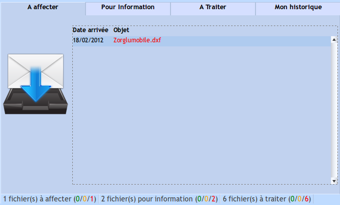

écran d'acceuil
Cet écran résume vos courriers en cours, en fonction de votre profil, l'affichage peut ne pas être similaire (pas le premier onglet).
La ligne de statut permet immédiatement de savoir où en sont vos courriers.